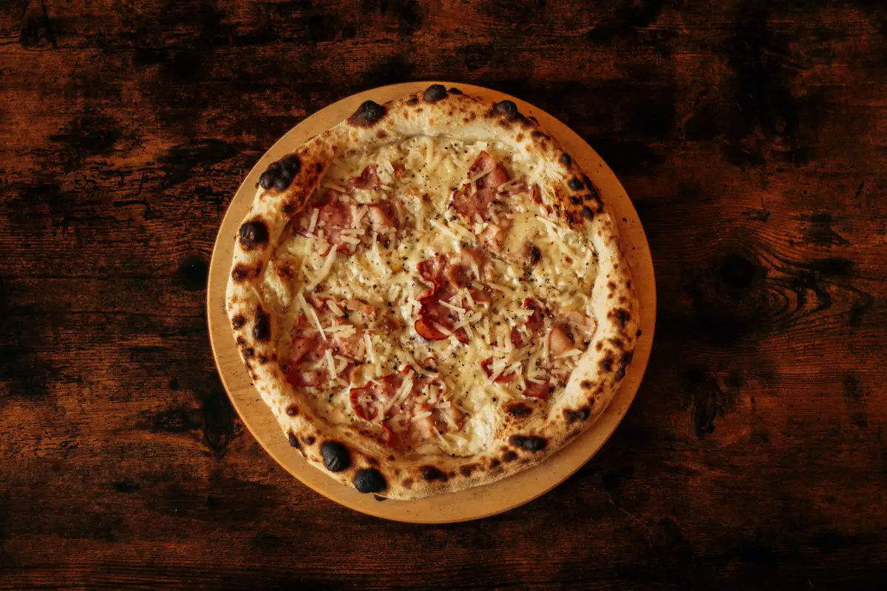
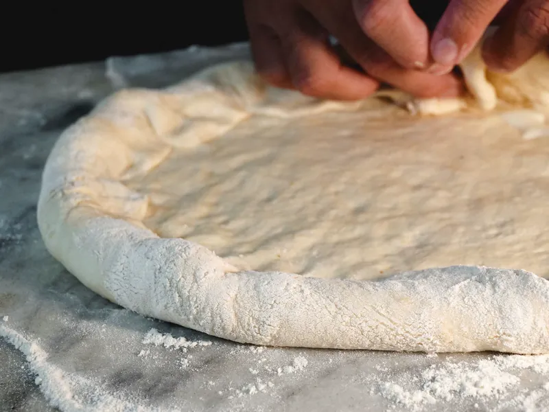

Upper Thomson · wood-fired sourdough
An evening by the wood fire.
Six pizzas, one starter, one dessert. Pizzas from $16.
Dinner Tuesday to Sunday from 5pm; lunch at weekends.


The dough
Two days of patience.
Flour, water, salt and our own sourdough starter. Nothing else. Each dough ball rests for 48 hours before it is stretched by hand, only when you order.
Then it meets the wood fire, at about 450°C, for around ninety seconds. It arrives blistered outside, soft inside and a little smoky.
Reservations
Your table, by the fire.
WhatsApp us the day, the time and how many. Walk-ins are welcome; for eight or more, a day ahead, please.
Reserve a table on WhatsApp- Tuesday – Friday
- 5pm – 10pm
- Saturday – Sunday
- 12pm – 10pm
- Monday
- Closed
Last orders 9:30pm
123 Demo StreetUpper Thomson MRT, five minutes’ walk
Open Upper Thomson in Google Maps
Demo: the real site links to the restaurant’s own Google Maps listing.
Good to know
Takeaway. Order on WhatsApp and collect in about twenty minutes. Order takeaway
Delivery. We don’t deliver: pizza from a wood fire goes soft in a box.
Vegetarian. The Margherita, Marinara and Funghi, the burrata and the tiramisu.